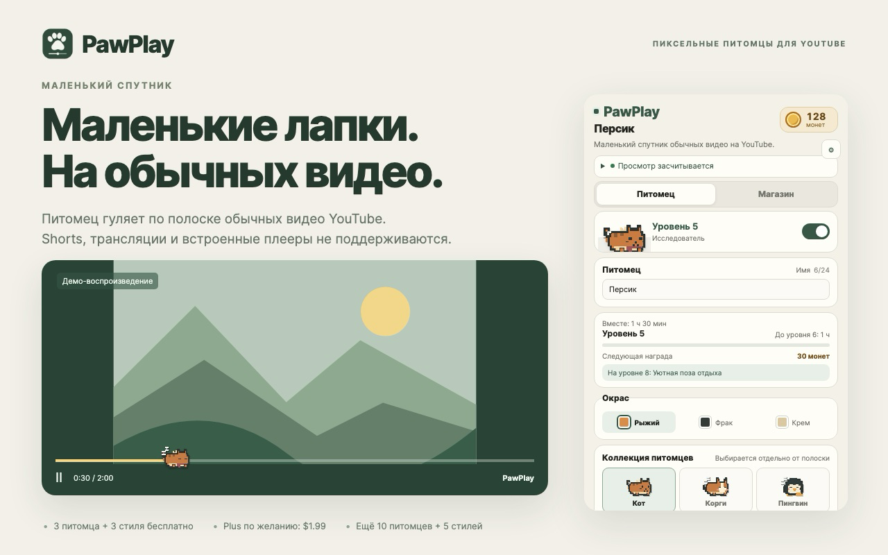
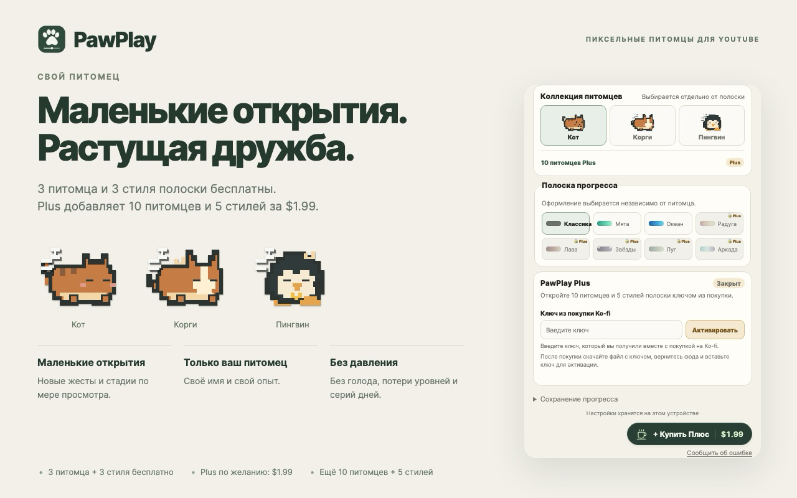
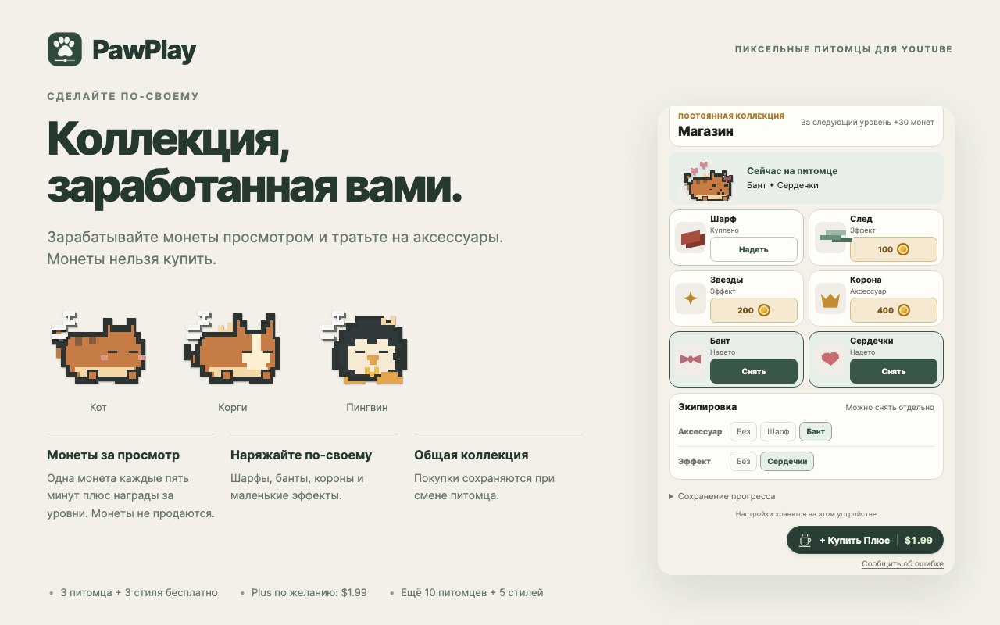

Выберите друга
Кот, корги или пингвин? Все трое бесплатны. У каждого свое имя, уровень и развитие.
Пиксельные питомцы для YouTube
Кот, корги или пингвин гуляет по полоске воспроизведения обычных видео YouTube. Дайте ему имя, смотрите видео вместе и наблюдайте, как он растет.

Выберите питомца. Он будет рядом, пока воспроизводится обычное видео на YouTube.
Кот, корги или пингвин? Все трое бесплатны. У каждого свое имя, уровень и развитие.
Активный просмотр помогает питомцу расти. Он осваивает маленькие жесты и превращается из малыша в компаньона. На паузе он отдыхает.
Получайте монету за каждые пять минут просмотра и бонусы за уровни. Собирайте шарф, бант, корону, след, звезды и сердечки.
Отдельный рост каждого питомца, общая коллекция и уютное меню.


В бесплатной версии доступны три питомца и три стиля полоски. PawPlay Plus подключается по желанию.
Кот, корги, пингвин и три стиля полоски доступны сразу. Игровые монеты по-прежнему открывают украшения и эффекты, купить их за деньги нельзя.
PawPlay Plus добавляет десять пиксельных питомцев и пять стилей полоски. Это разовая покупка за $1.99 на Ko-fi вне расширения.
Ключ проверяется локально. Для активации не нужны аккаунт и интернет. Сохраните ключ отдельно для переустановки или другого профиля Chrome.
Сообщите об ошибке или предложите нового питомца на GitHub. Для ошибки укажите версию браузера и что произошло. Не отправляйте пароли и приватные данные просмотра.